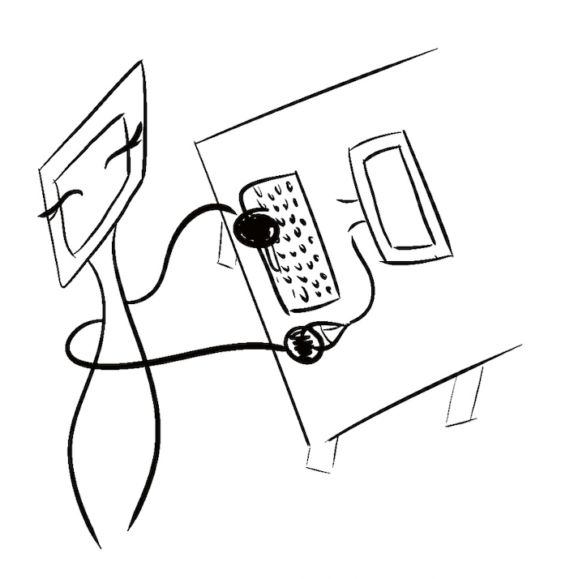

AI-Powered Personal Concierge
Potential Customers/Users: Busy professionals, individuals seeking personal assistance for daily tasks, and companies looking to improve customer support and engagement.
Description: The AI-Powered Personal Concierge is a virtual assistant designed to help users manage their daily tasks and responsibilities. Leveraging artificial intelligence and natural language processing, the concierge can schedule appointments, provide reminders, answer questions, and even make recommendations based on user preferences and interests.
Visual Depiction:
Prior Works Collection
Needs (or drivers)
The growing demand for personalized, efficient, and accessible services has led to the development of the AI-Powered Personal Concierge. This innovation aims to streamline everyday tasks and provide customized recommendations, allowing users to save time and make informed decisions. The expected outcomes include improved user satisfaction, increased productivity, and better decision-making.
Resources (or ingredients)
To develop this soft innovation, we would require:
- AI and machine learning expertise to develop a robust and adaptable algorithm
- Software developers to create user-friendly mobile and web applications
- API integrations with various services (e.g., booking platforms, eCommerce sites, etc.)
- User experience (UX) and user interface (UI) designers
- Marketing and sales strategies to reach potential customers
Precedents (or points of departure)
Existing services similar to this innovation include virtual assistant services like Amazon Alexa, Google Assistant, and Apple Siri. These AI-powered voice-activated assistants can answer questions, set reminders, and control smart devices. Furthermore, more specialized AI concierge services, such as X.ai and Clara, focus on specific tasks like scheduling meetings or booking appointments.